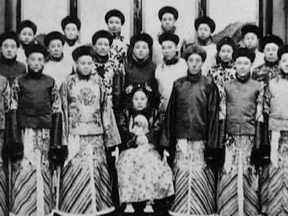
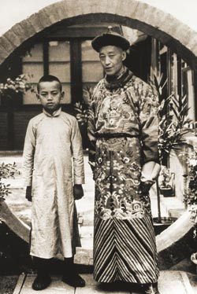
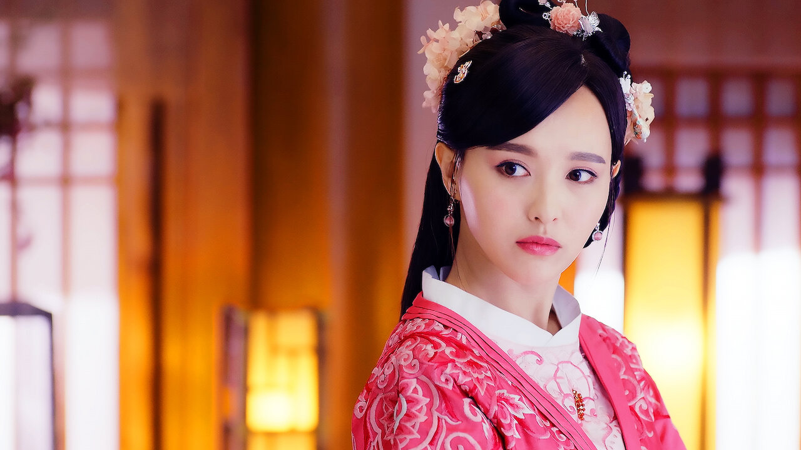
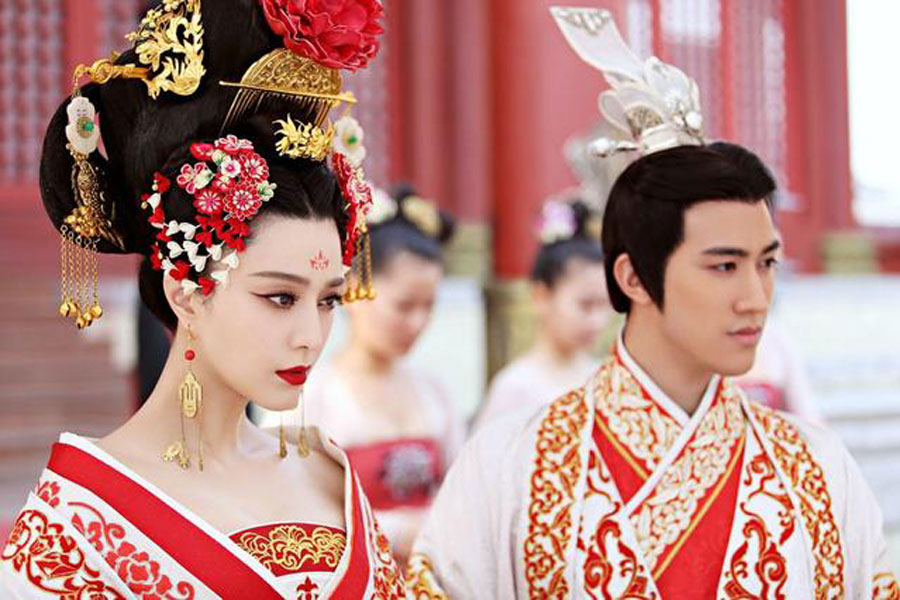

Otros datos sobre el harén
Eunucos
Para garantizar que cualquier niño nacido en el harén fuera engendrado por el emperador, los varones no podían servir a las mujeres de dicho harén. Las únicas excepciones a esta regla eran los eunucos, hombres castrados, lo que los dejaba impotentes.
A lo largo de la historia de la China Imperial, los eunucos han servido a la familia imperial, incluso como sirvientes en el harén. Sin embargo, lejos de ser simples sirvientes, estos eunucos podían aspirar a posiciones de poder y riqueza al involucrarse en la política del harén.
Rivalidades imperiales
Con tantas mujeres en el harén, era inevitable que surgieran rivalidades entre las mujeres del emperador, ya que competían por su atención. El puesto más codiciado era, por supuesto, el de emperatriz, y tener un hijo para el emperador sin duda sería una gran ventaja para una mujer del harén. En ocasiones, las mujeres ambiciosas del harén que conspiraban contra sus rivales formaban alianzas con eunucos. Si una intriga prosperaba, una mujer del harén podía ascender en la jerarquía. Ella, a su vez, recompensaba a los eunucos que la apoyaban, colocándolos en puestos de autoridad.
Este tipo de intrigas de harenes ha ocurrido con frecuencia en la historia china. Por ejemplo, durante la dinastía Tang, una de las consortes del emperador Gaozong fue Wu Zetian. Según la creencia popular, Wu Zetian mandó asesinar a su hijo recién nacido y culpó a la emperatriz Wang. Como resultado, la emperatriz fue degradada y Wu Zetian se convirtió en la nueva emperatriz. Sin embargo, no todos los harenes imperiales fueron focos de conspiración.
Muchas concubinas corrían un triste destino cuando moría su emperador. Eran sacrificadas, a menudo enterradas vivas, para unirse a su amo en el más allá.
Vídeo extra
Realizado por: Paula de la Cruz Pérez 4to Semestre Capacitación TICS. (10/03/2025)